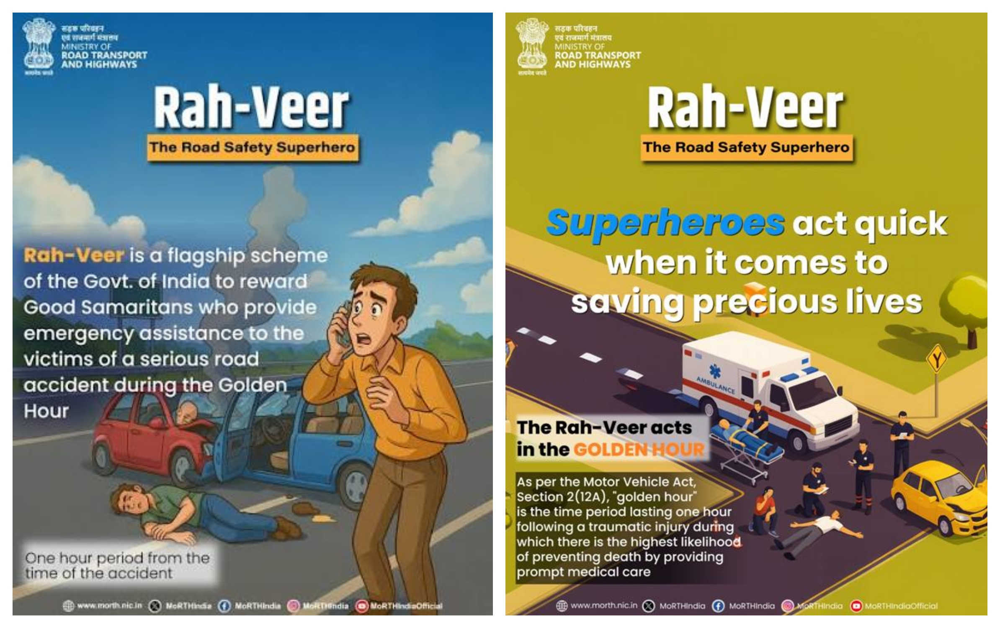

This help page is created to assist users in understanding how to use the Urban Safety Drive website effectively. If you have any confusion, doubts, or need guidance, this section will provide all necessary information. Our aim is to make your experience smooth and informative.

| Website Name | Description | Link |
|---|---|---|
| National Highways Authority of India | Highway updates, toll info, road conditions | Visit Site |
| Indian Road Safety Campaign | Road safety awareness & campaigns | Visit Site |
| Safe Bharat Initiative | Road safety education & initiatives | Visit Site |
| eChallan System | Check & pay traffic fines online | Visit Site |
| Ministry of Road Transport and Highways | Rules, acts & road safety policies | Visit Site |
If you still have any doubts or need more assistance, feel free to contact us through the Contact page. We are always ready to help you and guide you for better road safety awareness.